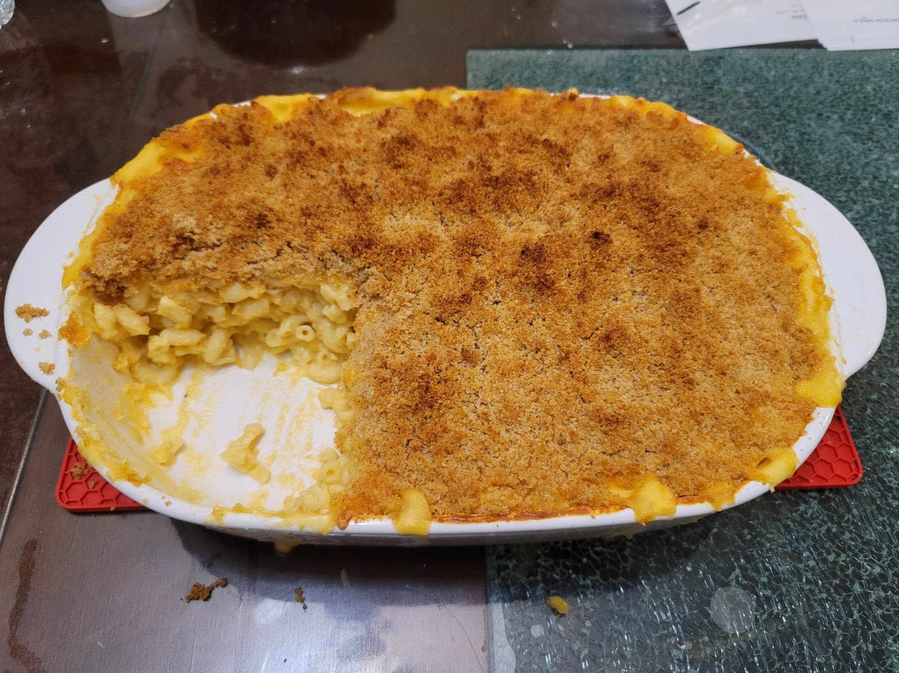

Baked Macaroni and Cheese

Ingredients:
- 1 lb Dried elbow pasta
- 6 tbsp Butter
- 6 tbsp Flour
- 4 cups Milk
- 16 oz Gruyere or any melty cheese, shredded
- 8 oz Sharp cheddar or any strong flavored cheese, shredded
- Salt, to taste
- Pepper, to taste
- 2 cup Breadcrumbs
- 5 tbsp Butter, melted
Instructions:
- Preheat the oven to 375 degrees Fahrenheit.
- Bring a large pot of salted water to a boil. Add in the pasta and cook to 2 minutes before preferred doneness. Then strain and reserve.
- In a separate large pot melt the butter over medium heat. Then whisk in the flour. Whisk continuously for 3 minutes over medium heat.
- Slowly add in the milk in 1/4-1/3 cup batches while whisking continously, making sure the milk is fully incorporated before adding more. Then stir for 5-7 more minutes or until the sauce is reduced enough to coat the back of a spoon.
- Add in 3/4 of the cheeses, reserving the rest for topping. Whisk until homogenous. Taste and add salt and pepper as needed.
- Pour the macaroni into a 9x13 inch baking dish. Then pour the sauce over it. Mix until fully incorporated. Top with the rest of the cheese.
- Melt the butter and combine with the breadcrumbs. Top the macaroni with the breadcrumbs and place into the oven. Bake for 30-35 minutes, or until the breadcrumbs are golden and it is bubbling on the sides. Remove from oven and let rest for 15-20 minutes before serving. Serve hot.